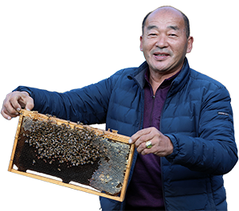

우리 마을에는 곰이 산다
2021년 12월 17일 발간
전남 구례군 지리산 자락에 사는 김윤식 씨(60)는 열다섯 살 때부터 벌을 쳤다. 반달가슴곰에 대해서는 어릴 때 포수들이 지리산 깊은 곳에 들어가 잡아온 것을 봤던 기억이 전부다. 커서는 볼 일이 없었다. 지리산 반달곰이 사라져서다.
2005년. 김 씨는 다시 곰을 마주했다. 외출했던 김 씨에게 어머니가 급히 전화를 거셨다.
‘곰인지 멧돼지인지가 벌통을 다 뒤집고 난리다!’라고.
2004년 지리산국립공원에 반달가슴곰이 방사된 이후 이와 같은 일은 종종 벌어졌다. 지리산 주민들은 이를 우려하고 한결같이 반달곰 방사에 반대했다. “곰이 사람보다 중하냐”고 목소리를 높였다.
국립공원공단 사람들은 마을 사람들에게 ‘산에 갈 때 다시라’고 방울도 나눠주고 “곰은 먼저 위협하거나 당황하지 않으면 사람을 해치지 않는다”고 설득했다. 2005년부터는 관련 손해보험을 들어 반달가슴곰으로 인한 피해가 확인될 경우 보상을 하고 있다.
방사 이후 5, 6년은 동네가 떠들썩했다. 반달곰들이 달콤한 냄새를 맡고 내려와 벌통을 훔쳐가거나 장독을 깨고, 등산객의 배낭에 냄새를 맡다 등산객이 식겁한 일이 있었다. 그러나 그 이후에는 이와 같은 ‘사고’가 서서히 줄었다. 보상 건수는 2008년까지는 연간 161건까지 치솟았으나 이후에는 연간 50건 이하로 줄었다.
김윤식 씨는 곰들이 자연에 적응하는 과정을 거쳤다고 생각한다.
“사람이 농사를 지어도 처음 몇 년은 시행착오를 겪잖아요. 곰도 같다고 봐요. 곰도 처음에는 ‘여기가 어디지’ 하고 인가로도 오고 하지만, 이제는 자연에서 터전을 잡고 먹이가 많은 곳도 찾고 새끼도 낳고 하니… 점점 안 오는 거죠.”
마을 사람들도 서서히 마음을 열었다. 김 씨도 그중 한 명이다. 반상회마다 찾아와 반달곰 복원 사업의 취지에 대해 설명하고 곰을 만났을 때의 유의사항에 대해 설명한 국립공원연구원 남부보전센터 직원들의 노력이 있어서 가능했다.
“지리산에서 곰을 키우는 게 아니고…. 여기가 원래 걔네들이 살던 데잖아요?”
이제 김 씨는 자신의 꿀에 ‘지리산 반달곰 벌꿀’이라 이름을 붙여 판다. 반달곰이 훔쳐 먹을 정도로 맛있고 달콤한 꿀이라는 얘기다. 인근에는 이처럼 반달곰 이름을 붙인 사과도 상품이 됐다. 반달곰과의 공존이 마을 사람들의 경제생활에 활력을 불어넣은 것이다.
“지리산에 사람만 사는 게 아니잖아요. 이제는 같이 사는 거죠.”
‘베어빌리지’로 유명한 경남 하동군 의신마을도 원래는 반달곰 복원 사업을 반대했다.
마을 수익의 70% 이상이 고로쇠 수액 채취에서 나오던 시기. 고로쇠 수액을 채취하는 초봄은 곰이 동면에서 깨는 시기다. 동면 기간 동안 새끼를 낳아 기르는 곰은 이 시기에 가장 예민하다. 국립공원공단이 반달곰 복원 사업을 추진하던 2000년대 초, 마을 사람들은 “청와대로 몰려가자”고 말할 정도로 동네 분위기가 흉흉했다.
그러나 자신이 나고 자란 고향 마을의 새로운 수익 사업을 고민하던 정봉선 씨(53)에게 반달곰 방사는 새로운 기회로 여겨졌다. 농작물 수확 체험 등 다른 마을에서도 하는 체험 사업보다는 지리산에서만, 이 동네에서만 할 수 있는 특화 사업이 될 수 있을 것 같았다. 반달곰 복원 사업을 추진하는 정부의 취지와도 맞아떨어질 것이란 판단이 들었다.
‘곰이라니, 말도 안 된다’는 마을 어르신들을 설득했다. 마을 청년들은 ‘자료를 찾아보니, 반달곰은 순한 곰이다’ ‘상생의 기회가 될 것’이라며 각 집의 부모들을 설득하며 힘을 보탰다. 그렇게 2009년 마을 주민들과 하동군, 환경부, 국립공원공단 등과 협의를 시작해 2014년 11월 ‘베어빌리지’가 문을 열었다.